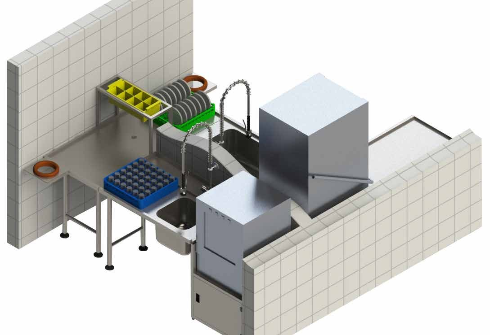
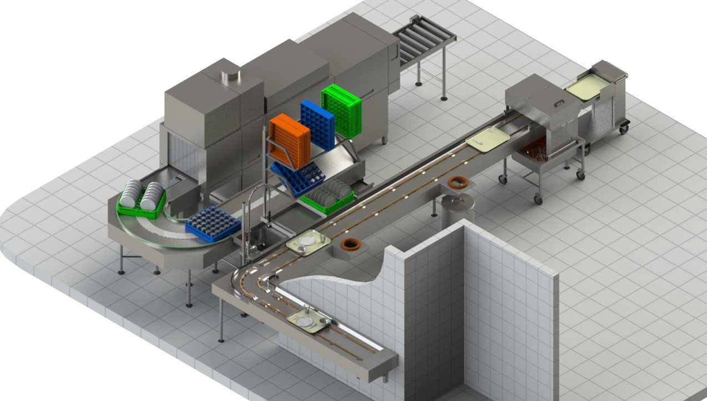
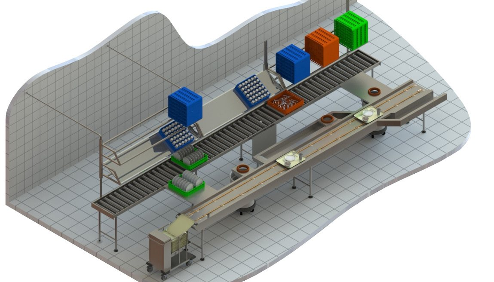
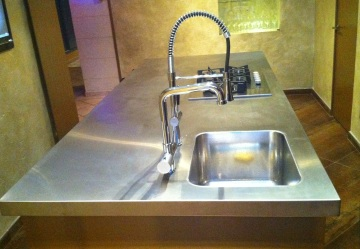

Tri sélectif
Zones de tri intégrées à la dépose plateaux ou en îlot séparé.

Pas une laverie de nouvelle génération ou réhabilitation n’est étudiée sans l’implantation d’une zone de tri sélectif, intégrée à la dépose plateaux ou en îlot séparé.
Plus qu’un effet de mode, le tri sélectif répond aux critères environnementaux et permet une meilleure fluidité de la zone de triage, en sensibilisant les convives à la pénibilité du travail de plongeur.
Le triage en amont permet d’envisager l’intégration dans la laverie d’un broyeur compact des déchets exclusivement alimentaires, qui diminue considérablement le volume et le coût de l’évacuation des déchets.
De nouvelles techniques d’impression sur l’inox permettent à Sopacom de proposer une décoration personnalisée de la zone de tri sélectif, pour une intégration parfaite quel que soit le décor.
Source : Présentation « Environnement laverie mécanisé » (PDF Sopacom)
Seules les informations figurant dans les documentations Sopacom sont reprises. Les points demandés mais non documentés sont signalés « à confirmer ».
| Implantation | Intégrée à la dépose plateaux ou en îlot séparé |
|---|---|
| Objectifs | Critères environnementaux · fluidité de la zone de triage · sensibilisation des convives |
| Déchets | Tri en amont permettant d’envisager un broyeur compact des déchets exclusivement alimentaires |
| Décoration | Impression sur inox — décoration personnalisée de la zone de tri |
| Équipements associés | Blocs de tri amovibles avec TVO, ponts de tri, tables de tri mobiles (gamme Technicord) |
Source : Présentation « Environnement laverie mécanisé » (PDF Sopacom)
Tri sélectif en situation.




S’intégrer à l’ensemble de la laverie.
Dépose plateaux
Zone de tri intégrée au convoyeur Technicord.
Source : Présentation « Environnement laverie mécanisé » (PDF Sopacom)
En savoir plus →Tri frontal
Le Transflex est recommandé pour le concept laverie avec tri frontal.
Source : Fiche Transflex (PDF Sopacom)
En savoir plus →Restauration scolaire
Participation active des élèves au triage en amont du plateau-repas.
Source : Site actuel sopacom-industrie.fr
En savoir plus →57 blocs AutoCAD Tri sélectif.
Extraits de la bibliothèque CAO Sopacom : chaque bloc est consultable en plan et téléchargeable au format DWG.

TS700Tri selectif 700F700Facade lateral Tri selectif 700
TS1400Tri selectif 1400
F1400Facade lateral Tri selectif 1400
TS2100Tri selectif 2100 F2100Facade laterale Tri selectif 2100
F2100Facade laterale Tri selectif 2100
TSA1400Tri selectif Arrière 1400
TSA2100Tri selectif Arrière 2100